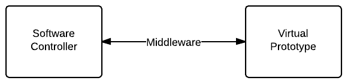
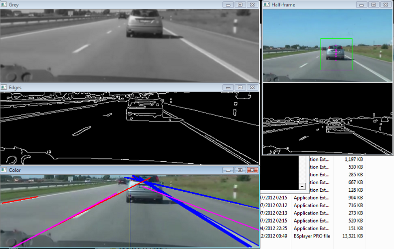
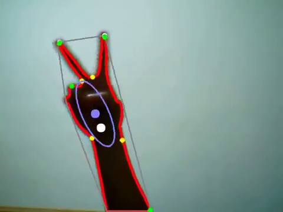

Virtual Prototyping
Behzad Samadi, PhD
Mechatronics3D
DIPECC 2014, Dubai
April 9, 2014
It All Started with LEGO!
LEGO MINDSTORMS NXT

LEGO®
LEGO MINDSTORMS EV3

LEGO®
Open Software

Open Hardware

Bicycle

Razyeh Mousavi
Ballbot

Ball on Plate

LEGO MINDSTORMS
It was very exciting at first but I had more than 40 students and only 3 sets of LEGO Mindstorms!
Amazing Journey
We realized that before making the robot, there were a lot of things that we needed to learn.
Operating System

3D Animation

Controller Design

How About a Virtual LEGO Set?
- This virtual robot is interesting but what if I want to build another robot?
- How hard is it to build a virtual robot?
Causal Modeling
- Writing the dynamic equations
- Converting the equations to ordinary differential equations
- Creating a signal flow model e.g. a Simulink model
- Building a virtual robot seems to be different from building a real robot
Virtual LEGO Set
What if we had a set of virtual LEGO parts and we could build a robot with them?
Virtual LEGO Set
We made one!

Alborz Gharraee
Modelica and MapleSim

- The connections between components are physical connections like position, voltage, flow,...
- Acausal modeling is very similar to building a real system
Acausal Modeling with MapleSim

Functional Mockup Interface

- Model Exchange, Co-Simulation, Product Lifecycle Management
- There are over 35 Tools supporting FMI
Courtesy of ITAE
Trial and Error

Expensive, time consuming, not reliable
Model Based Approach

Model Based Development

Saves resources, time, money
Courtesy of ITAE
Old Approach
- Easy: build the model and design the controller in a high level environment like MATLAB
- Hard: rewrite your code for the hardware controller on the physical prototype
- Problem: rewriting the code is time consuming and error prone
Software in the Loop

- The controller and the virtual prototype are two different applications.
- The applications "talk" to each other using a "middleware".
- The controller doesn't see the difference between the virtual and physical prototypes.
Middleware
- Using the same language to exchange messages
- Components can be replaced without affecting the whole system
What is ROS?
- a set of software libraries and tools
- from drivers to state-of-the-art algorithms
- powerful developer tools
- open source.
ROS Industrial and MoveIt


src
ROS 101

OpenCV

OpenCV

motion, line, face, feature detection
Depth Estimation with OpenCV

src
Gesture Detection with OpenCV

src
CloudSim